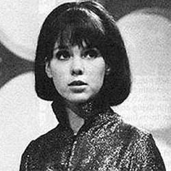

| Home | The Doctors | The Companions | The Villains |
|
|||
| cf
Sara KingdomSpace Security Service agent Sara Kingdom was a ruthless soldier, defending the Guardian of the Solar System, Mavic Chen. On his instruction, she shoots her brother Brett Vyon dead, believing him and the Doctor to be traitors. She later discovers that Chen himself is the traitor - in league with the Daleks to become rule of the universe by using the Time Destructor. When the Time Destructor is activated, destroying the Daleks, Sara is caught within its effect and ages to death before Steven’s eyes. |